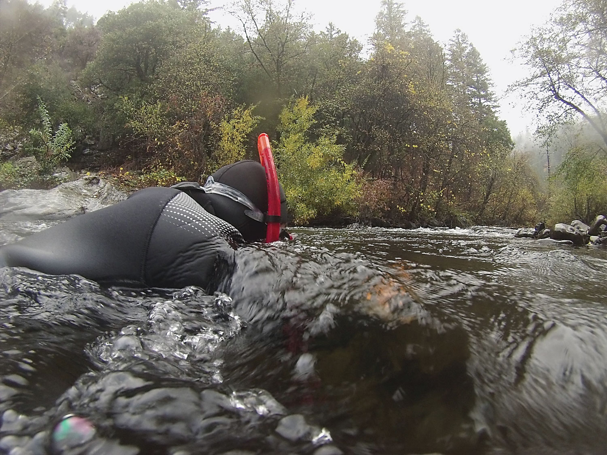
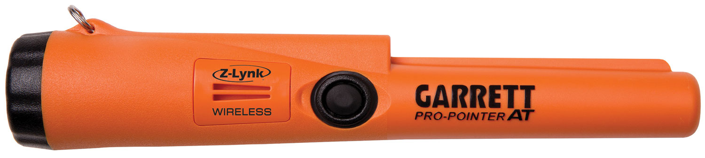
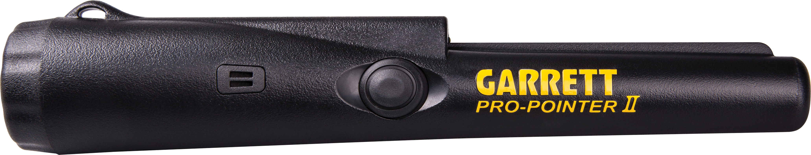
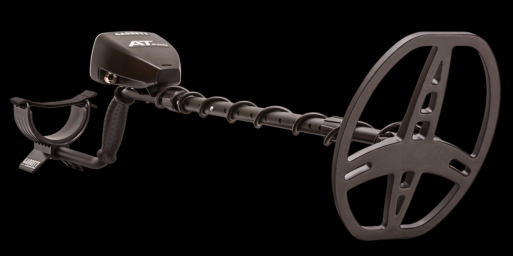
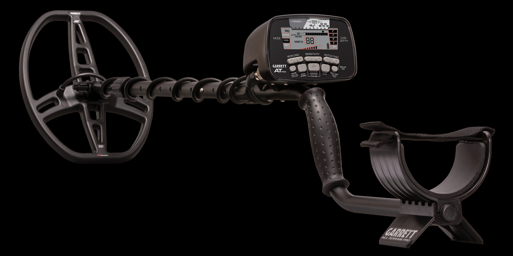
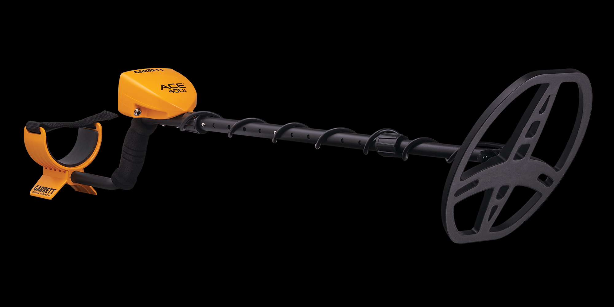
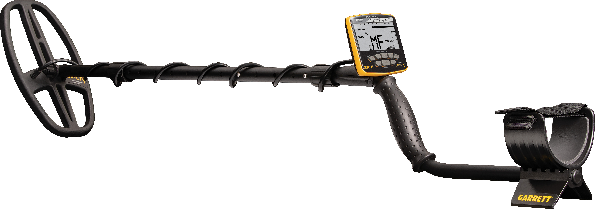

Pinpointers
Detectores de ponteiro para localização precisa do objeto após a detecção

Pro-Pointer AT
Pinpointer totalmente submersível até 3 metros. 3 níveis de sensibilidade, alarme sonoro + vibração, LED de iluminação traseiro e resistência a quedas. O mais vendido da Garrett.

Pro-Pointer AT Z-LYNK
Pinpointer wireless com tecnologia Z-Lynk para conectar automaticamente ao detector AT Max ou ACE Apex. Submersível, vibração + áudio. O sinal do pinpointer chega instantaneamente no fone de ouvido.

Pro-Pointer II
O pinpointer mais famoso do mundo. Sensibilidade automática, alarme sonoro + vibração, LED de iluminação, clip de cinto e resistência a respingos. Compatível com todos os detectores.
Bobinas de Busca
Bobinas originais Garrett para ampliar profundidade, sensibilidade e área de cobertura

Bobina 5×8 DD Série AT
Bobina DD de tamanho intermediário para a série AT. Ideal para áreas com muito ferro e minerais. Excelente penetração em solos difíceis com boa cobertura lateral.

Bobina 8,5×11 DD Série ACE
Bobina DD para a série ACE com maior área de varredura que a original. Maior profundidade de detecção e melhor desempenho em solos mineralizados e com interferências.

Bobina 8,5×11 DD Série AT
Bobina DD grande para os detectores AT Series. Maior cobertura de área por passagem e melhor profundidade em campo aberto. Perfeita para grandes terrenos e praias.

Bobina 9×12 CC Série ACE
Bobina concêntrica de tamanho maior para detectores ACE. Melhor para solos com baixa mineralização e busca de objetos maiores e mais profundos. Maior área de varredura por passagem.

Bobina 11×13 DD Para ATX
Bobina DD de grande porte para o detector ATX de pulso de indução. Ideal para garimpo em solos altamente mineralizados com máxima profundidade de detecção.

Bobina 11×13 Mono Fechada ATX
Bobina monoloop fechada para ATX com excelente profundidade de detecção em solos abertos. Mais sensível a objetos pequenos comparada às bobinas DD de mesmo tamanho.

Bobina 11×14 DD ACE Apex
Bobina Raider DD para o ACE Apex com tecnologia Multi-Flex™. Maior área de cobertura para detectar mais profundo e em maior área por passagem. Compatível com todos os modos multi-frequência do Apex.
Bobina 8" Mono Para ATX
Bobina monoloop de 8 polegadas para o ATX. Mais compacta para trabalho em áreas apertadas e garimpo em rios. Alta sensibilidade a pepitas pequenas de ouro nativo.

Bobina 10×12 DD ATX
Bobina DD de 10x12 polegadas para o ATX. Equilíbrio perfeito entre cobertura e sensibilidade para garimpo profissional. Superior em solos altamente mineralizados.
Protetor de Bobina 6,5×9
Capa protetora de plástico resistente para proteger a bobina de batidas, arranhões e desgaste durante o uso em campo. Prolonga a vida útil da bobina original.
Equipamentos de Garimpo
Bateia e peneira Garrett para classificação de sedimentos e concentração de ouro
Bateia 15" Super Sluice
Bateia de 15 polegadas com fundo acanalado tipo sluice para concentrar partículas de ouro e outros minerais pesados. Plástico resistente, leve e de alta durabilidade para uso intenso no garimpo.

Peneira para Garimpo 14" Garrett Sifter
Peneira classificadora de 14 polegadas para garimpo e pesquisa de ouro. Malha resistente para classificação de sedimentos de rios e solos. Excelente para separar material antes de usar na bateia.